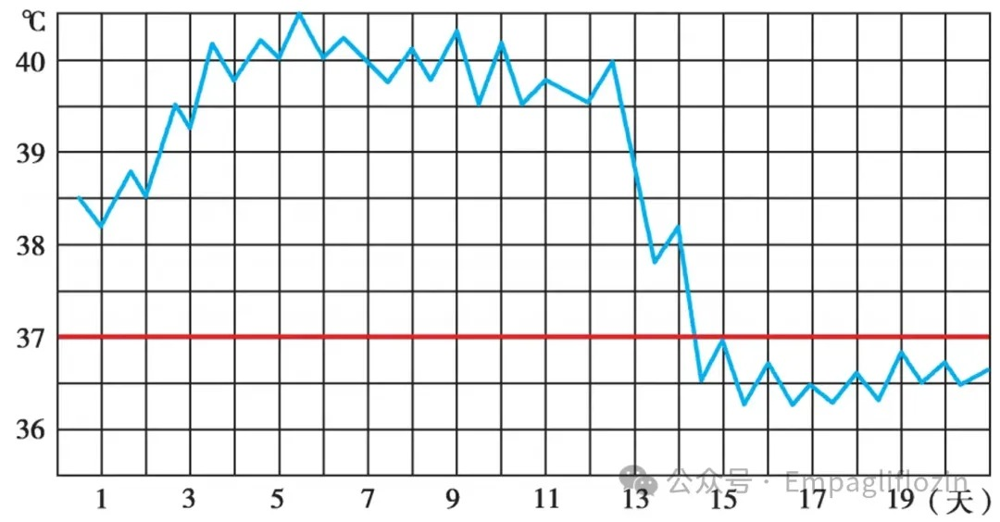
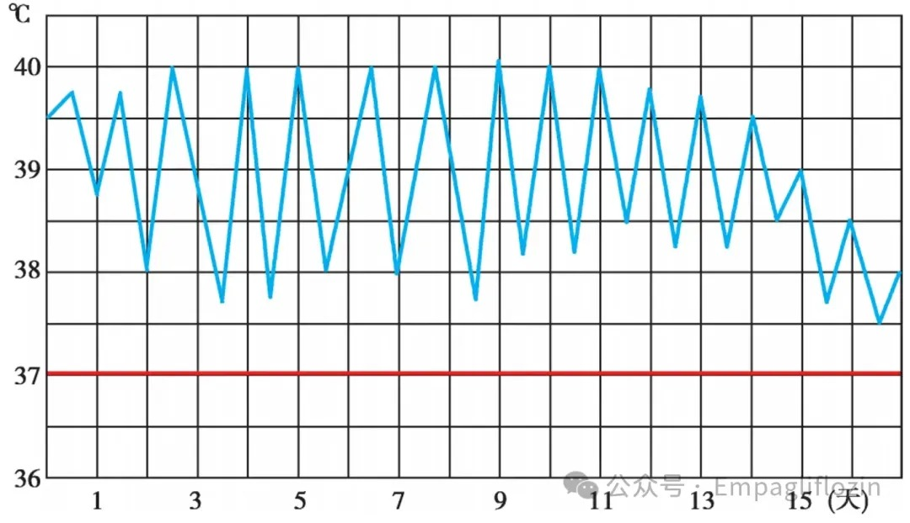
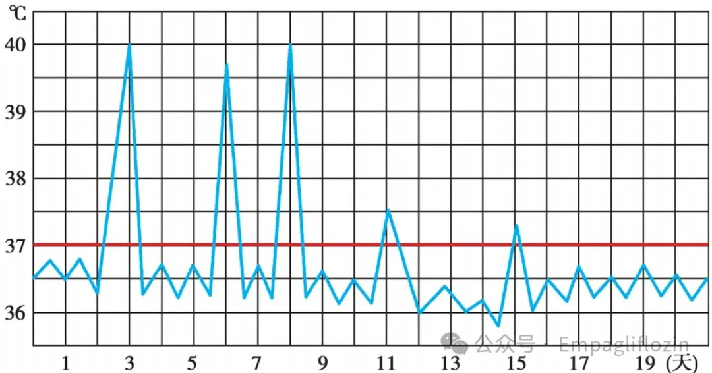
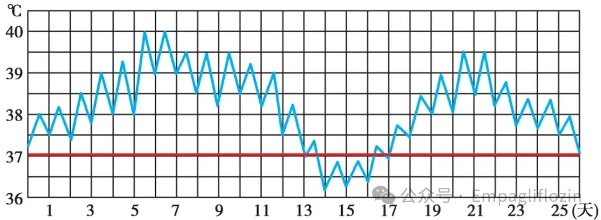
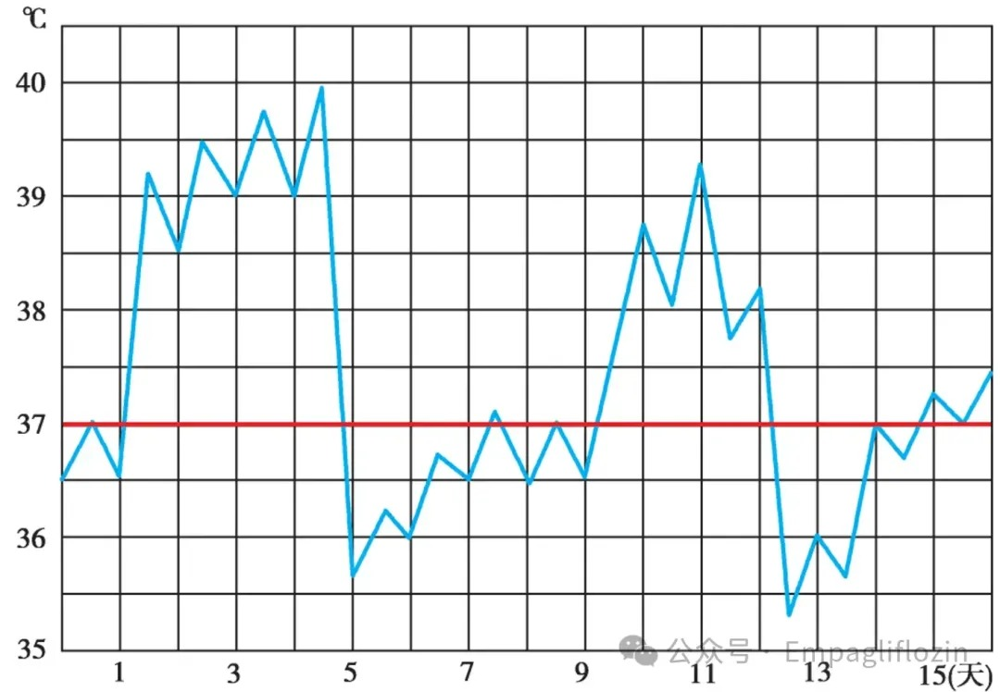
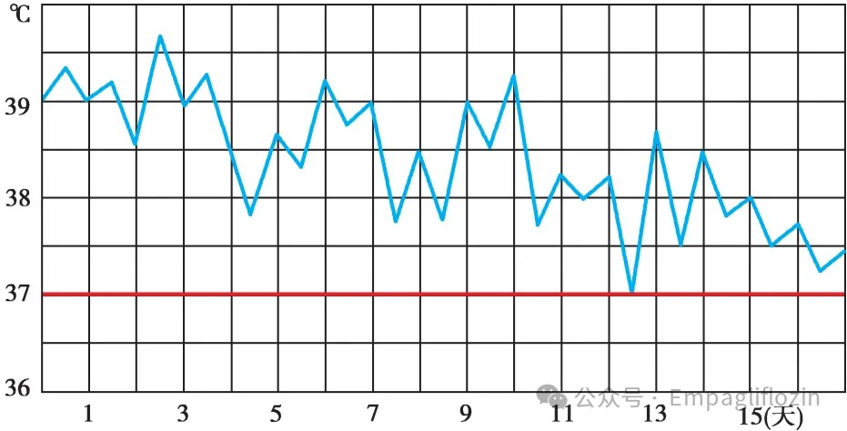
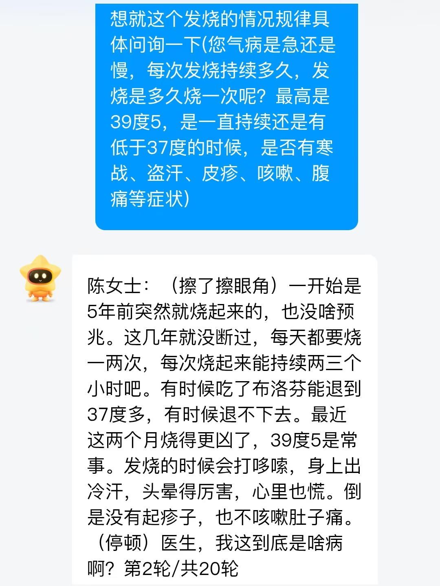
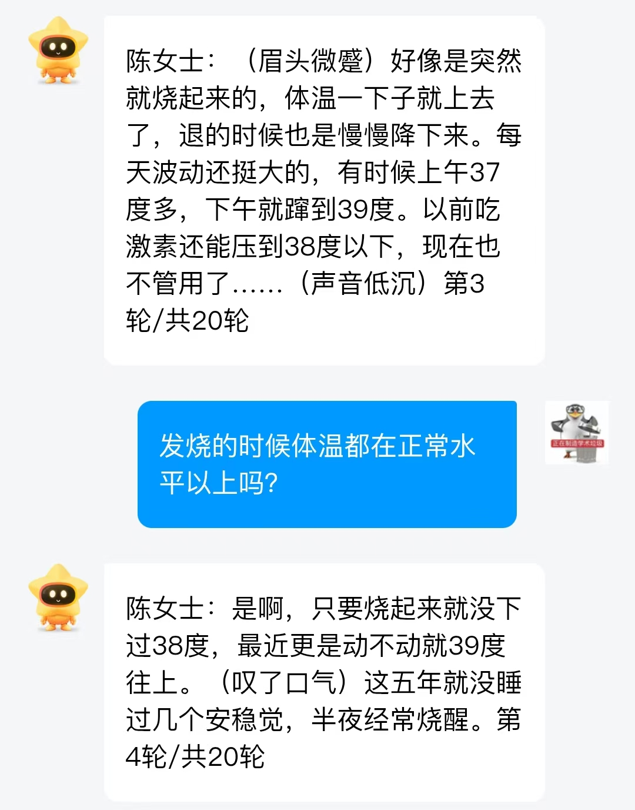
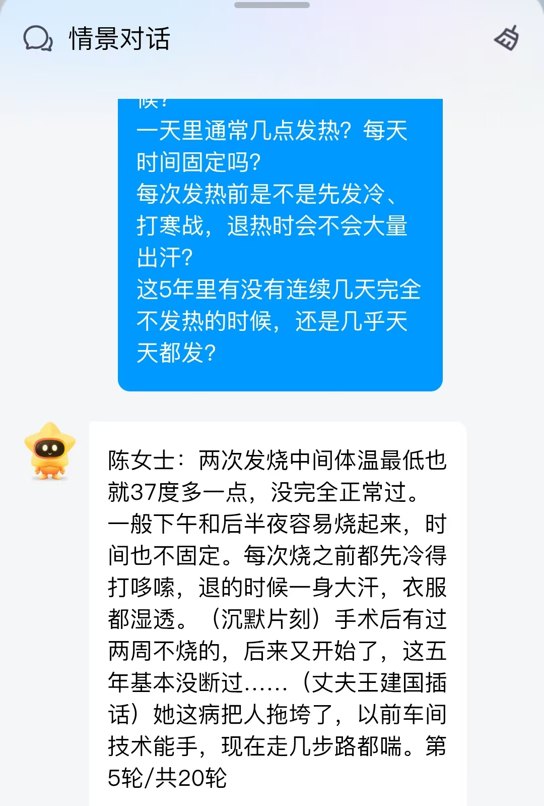
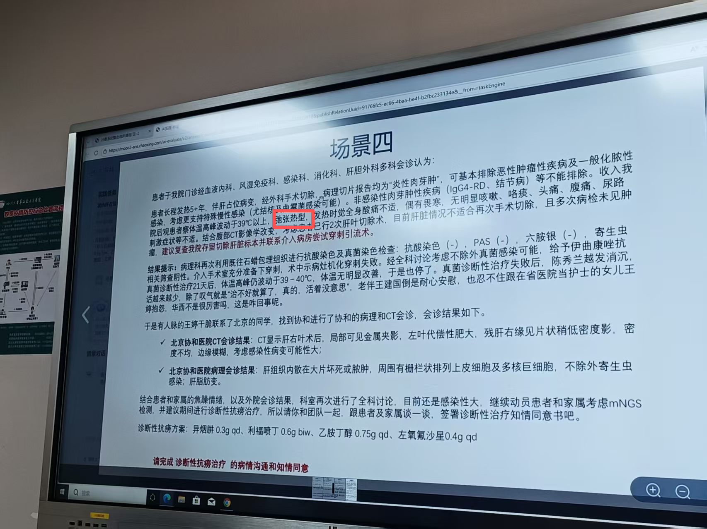

本次PBL的病人主诉有两点——发热和肝占位，但是这个病人反反复复发热了5年，吃了头孢、布洛芬、激素都无效，所以我们对于该病人到底是什么热型保持着极大的好奇心。
本文将介绍以下几点：









发热规律
5年前突发起病
此后长期反复发热，这5年“基本没断过”
每天1–2次发热，常见于下午和后半夜，时间不固定————并非无规律，不规则热概率小
体温变化特点
最高体温可到39.5℃
两次发热中间最低体温也有37℃多————体温波动较大，排除稽留热
从未完全降到正常体温——都在正常水平以上————排除间歇热、波状热、回归热这几个有正常水平的热型
最可能热型————弛张热

弛张热在本例中的意义，不是直接指向某一个明确诊断，而是提示体内可能存在持续活动的感染或炎症过程。
结合患者“发热伴肝占位”的主诉，以及病程迁延5年、伴食欲差和水肿等表现，提示其发热并非孤立症状，而更可能与肝脏病变本身有关。
因此，本例中热型的价值主要在于帮助缩小诊断范围、提示思考方向：
相比于单纯短暂性感染，更应考虑肝占位相关的慢性感染性或炎症性病变。
但热型本身特异性有限，最终诊断仍需结合影像、病理及其他检查综合判断。
“理解发生的瞬间，通常并不优雅。”
相对于传统的教学模式————课堂安静、进度顺畅、结构完整
这种PBL的模式给了我们自己主动控制节奏的机会
而且花一下午的充裕的时候就围绕这一个病例反复讨论这个过程本身就很奢侈
同时，以一个实际问题的探索过程穿插学习，让我们必须横向考虑多个科室（系统）的知识和临床实践经验，极大丰富了我们知识体系。以MDT为例，当不同科室意见相左时，也锻炼了我们的批判性思维和临床决策力。